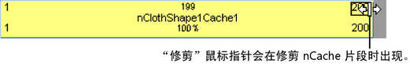
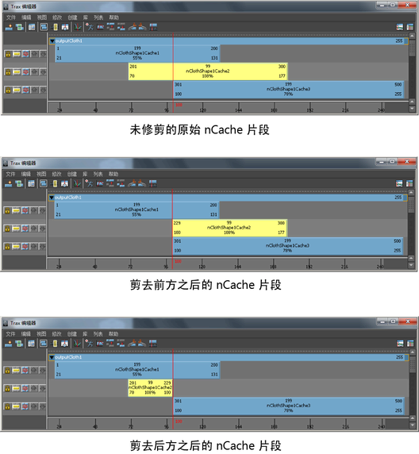
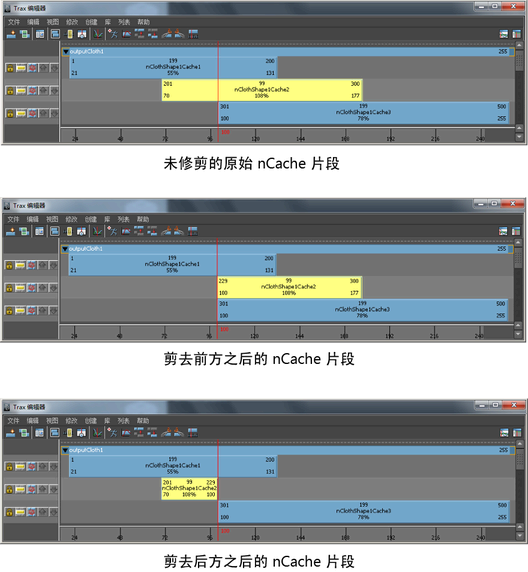
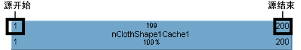
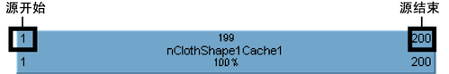

可以修剪 nCache 片段以略去缓存片段开头或结尾的模拟分段。这会更改缓存片段的“源输入”(Source In)和“源输出”(Source Out)时间。修剪 nCache 片段不影响磁盘上关联的缓存文件。使用修剪功能从缓存片段中略去的分段不会被删除，在还原缓存片段的原始长度时，可以恢复这些分段。
修剪 nCache 片段
- 在场景视图中，选择要修剪其缓存片段的对象。
- 在“Trax 编辑器”(Trax Editor)中，选择“列表 > 加载选定角色”(List > Load Selected Characters)。
当前对象的所有缓存都以片段形式显示在轨迹视图中。
- 选择要修剪的 nCache 片段。
- 执行下列操作之一：
- 拖动片段顶部角点的热点以修剪您的缓存片段。 
- 将 Trax 当前时间指示器放置在所需位置，在缓存片段上
 ，从出现的上下文相关菜单中选择“剪去前方”(Trim Before)或“剪去后方”(Trim After)，或者在 Trax 菜单栏中选择“编辑 > 剪去前方”(Edit > Trim Before)或“编辑 > 剪去后方”(Edit > Trim After)。 
，从出现的上下文相关菜单中选择“剪去前方”(Trim Before)或“剪去后方”(Trim After)，或者在 Trax 菜单栏中选择“编辑 > 剪去前方”(Edit > Trim Before)或“编辑 > 剪去后方”(Edit > Trim After)。 
如果选择了“剪去前方”(Trim before)，缓存片段中出现在 Trax 当前时间指示器之前的部分将从缓存片段中移除。如果选择了“剪去后方”(Trim After)，缓存片段中出现在 Trax 当前时间指示器之后的部分将从缓存片段中移除。请参见 Trax 工具栏。
- 在“通道盒”(Channel Box)中，更改缓存片段的“源开始”(Source Start)和“源结束”(Source End)通道值，或
 缓存片段上的“源开始”(Source Start)或“源结束”(Source End)值，键入新数值，然后按
缓存片段上的“源开始”(Source Start)或“源结束”(Source End)值，键入新数值，然后按  键。 
键。 
如果更改 nCache 片段的“源开始”(Source Start)值，将从缓存片段的开头修剪帧。如果更改缓存片段的“源结束”(Source End)值，将从缓存片段的末尾修剪帧。请参见源开始/源结束。修剪的帧不会从片段或磁盘上的关联文件中删除。可以通过还原缓存片段的原始长度来恢复修剪掉的帧。
- 拖动片段顶部角点的热点以修剪您的缓存片段。